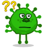

Let's see What is COVID ! !
Let's see What is COVID ! !
WHAT IS COVID-19?
'CO' stands for corona, 'VI' for virus, and 'D' for disease. Formerly, this disease was referred to as '2019 novel coronavirus' or '2019-nCoV.' The COVID-19 virus is a new virus linked to the same family of viruses as Severe Acute Respiratory Syndrome (SARS) and some types of common cold. COVID-19 is caused by infection with the severe acute respiratory syndrome coronavirus 2 (SARS-CoV-2) virus strain.
HISTORY OF COVID-19:
On 31 December 2019, WHO was informed of cases of pneumonia of unknown cause in Wuhan City, China. A novel coronavirus was identified as the cause by Chinese authorities on 7 January 2020 and was temporarily named “2019-nCoV”. Severe acute respiratory syndrome coronavirus 2 (SARS-CoV-2) is a novel severe acute respiratory syndrome coronavirus. It was first isolated from three people with pneumonia connected to the cluster of acute respiratory illness cases in Wuhan. All structural features of the novel SARS-CoV-2 virus particle occur in related coronaviruses in nature.
How does the COVID-19 virus spread!

The virus is transmitted through direct contact with respiratory droplets of an infected person (generated through coughing and sneezing), and touching surfaces contaminated with the virus. The COVID-19 virus may survive on surfaces for several hours, but simple disinfectants can kill it.
SYMPTOMS TO IDENTIFY!!

-
Most common symptoms:
- High Fever
- Dry Cough
- Tiredness
-
Less common Symptoms:
- Aches and pains
- Sore throat
- Diarrhoea
- Conjunctivities
- Headache
- Loss of taste or smell
- A rash on skin or discolouraton of fingers or toes
-
Serious symptoms:
- Difficulty breathing or shortness of breath
- Chest pain or pressure
- Loss of speech or movement
Seek immediate medical attention if you have serious symptoms. Always call before visiting your doctor or health facility. People with mild symptoms who are otherwise healthy should manage their symptoms at home. On average it takes 5–6 days from when someone is infected with the virus for symptoms to show, however it can take up to 14 days.
VIDEOS TO WATCH:-
What to do if you're covid positive(+ve)?

Step 1:
Stay calm and self-isolate:-
As soon as you feel any symptoms including sore throat, a cough, loose motions or mild fever, isolate yourself immediately. This simple act of caution can save lives and help reduce the spread of COVID-19. Please don’t panic either. Remember that most people recover from COVID-19 and do not require hospitalization. Self-isolate as soon as you feel unwell. Do not wait to get tested or receive the results.
Step 2:
Consult a doctor:-
Reach out to a doctor by phone who can assess your condition and advise you on the best course of action. They might recommend that you stay at home and manage the symptoms, or that you need to go to hospital. Seek medical advice on how to monitor and manage symptoms. The doctor will tell you if you can stay home or need hospital treatment.
Step 3:
Stay apart :-
If you have been advised by a doctor to stay at home due to #COVID19, keep yourself away from the rest of the household and stay in a separate room (if possible) with all the essential items you will need for a 10-day stay. This will help protect those in your household from contracting the virus. If it’s an option, self-isolate in a room with an attached bathroom or toilet or washroom. Isolate yourself in a separate, closed room. Open the windows for ventilation if possible.
Step 4:
Wear a mask:-
Make sure that you and anyone else interacting with you in-person is wearing a triple-layered mask that covers the nose and mouth completely. Do not touch the outer surface of the mask or your face. Wear a triple-layered mask whenever you open the door. Those entering your room should also wear a mask. Discard and use another mask after eight hours of continuous wearing.
Step 5:
Wash your hands:-
You have heard this often and it remains very important to help control the spread of diseases such as COVID-19. Wash your hands frequently with soap or a 70 per cent alcohol-based sanitizer. When you are self-isolating because of COVID-19 and want the room cleaned, please do it yourself with a disinfectant or soap. Utensils and dishes should be cleaned with soap/detergent and water while wearing gloves. The utensils and dishes may be re-used. Don't share personal items like utensils and towels with others.Wash your hands with soap frequently. Clean your room yourself with disinfectant or soap. Caregivers must wear gloves when washing dishes.Don’t share personal items.
Step 6:
Check your oxygen levels:-
It's important to keep an eye on your oxygen saturation levels regularly using a pulse oximeter. Put your finger in, press the button and wait to see your oxygen level and pulse rate appear on the screen. Check it every six hours or more frequently if your breaths are coming in too fast. The typical healthy range for oxygen saturation is between 95% and 99%. If it falls below 94% contact your doctor immediately and seek medical advice. Monitor your oxygen levels every six hours or more. Keep track of your levels in a diary.
Step 7:
Monitor your temperature:-
Every six hours, use a thermometer and see if you have developed a fever. If you have a fever, check your temperature more frequently to see if the fever is subsiding or increasing. It might be a useful practice to note down the oxygen level and temperatures so it’s easier to keep track. Measure your temperature every six hours. Do it more frequently if you have a fever.Step 8:

Do tepid sponging:-
Give yourself a tepid sponge refresh using tap water. Do not use cold water. Ideally, if you are very unwell, have a caregiver or family member available to provide care. The caregiver should wear gloves and a triple layered mask while giving any support. Do tepid sponging using tap water. Do not use cold water.The effects of giving Tepid Sponge were making vasodilatation of blood vessels, pores, of skin, reducing of blood viscosity, improving metabolism, and sti skin receptor sent to hypothalamus posterior to decrease the body temperature through evaporation technique
Step 9:
Only have medicines which a doctor prescribes:-
If you are at home, a doctor may prescribe medicines to relieve symptoms. Do not self-medicate. Home concoctions like garlic, camphor and carom seed (ajwain) bundles cannot improve oxygen levels. Take paracetamol (500 mg) every four to six hours if you have a high temperature, aches and pains. Do not fall for false information from unverified sources. You should never self medicate, only take what the doctor prescribes you. Do not have more than four doses maximum within a 24-hour period.
Step 10:
Stay hydrated and eat well:-
Drink enough water and eat nutritious meals even if you are unable to smell or taste them. There is no food known to treat or cure COVID-19 but eating healthy meals loaded with nutrients is useful to help your body recover. Drink lots of water and eat nutritious meals. It’s not a cure, but eating healthy will help your body recover.
Step 11:
Take REST well:-
Your body and mind both need to rest and relax when you have COVID-19. Resist the temptation to doomscroll on social media and instead spend your time reading books, watching TV shows and films, listening to music, and having calls with your loved ones. When you or a loved one are isolating at home due to a COVID-19 diagnosis and your doctor’s advice , look out for warning signs that indicate the need to immediately go to hospital and seek emergency medical intervention.To prevent the spread of COVID-19:
- Stay home if you feel unwell.
- Cover your nose and mouth with your bent elbow or a tissue when you cough or sneeze.
- Clean your hands often. Use soap and water, or an alcohol-based hand rub.
- Choose open, well-ventilated spaces over closed ones. Open a window if indoors.
- Wear a mask in public, especially indoors or when physical distancing is not possible.
- Maintain a safe distance from others, even if they don’t appear to be sick.
- Get vaccinated when it’s your turn. Follow local guidance about vaccination.
How To GET VACCINATED?
There is many ways to get vaccinated.People,above 18 is capable of getting vaccine. Types of vaccine is listeded below,
| TYPE | DOSES | Duration to take next DOES | Covishield | Covaxin | Sputnik |
| 2 Dose | 2 Dose | 2 Dose |
| 84 Days | 28 Days | 21 Days |
Easy way to book vaccine slot is done by CoWIN WEBsite!
➡️➡️➡️ It requires your phone number and aadar number.
You can also register using "Paytm APP" for registeration.
After VACCINATED ,What Should do!
- Drink a lot of water: Staying hydrated is extremely important both before and after your vaccination. The most common side effects of vaccines include muscle pain, fatigue, headache, and fever. Being properly hydrated will not only prevent you from feeling sick but may also help to shorten the duration and intensity of side effects.
- Eat a well-balanced diet: To avoid serious side effects, a well-balanced diet is essential. Super foods like green vegetables, turmeric, and garlic, that are high in nutrients and boost immunity, should be included in your diet. Seasonal fruits rich in Vitamin C can also aid in fighting the vaccine side effects.
- Get at least 7 to 8 hours of sleep: When you get vaccinated, the body relies on immune responses to develop protection. It is recommended that recently vaccinated people sleep for at least 7-8 hours as sleep deprivation can result in suppressed immunity since the body rebuilds its defence mechanisms during sleep. Not getting enough sleep can also trigger stress, which further supresses the immune system.
- Continue with COVID-19 appropriate behaviour: The most important thing to do post-vaccination is to continue wearing masks, regularly washing, or sanitizing your hands, maintaining physical distance, avoid crowded places and avoid touching surfaces. Apply a clean, cool, and wet cloth (or some ice) over the arm after the vaccination to reduce the pain. One can also do mild exercise or use the arm for light activities to further lessen the pain and discomfort.
- Consult your doctor before the vaccination if you are on steroids or blood thinners: People on steroids and blood thinners can stop their medications for two days before and two days after the jab to prevent adverse side-effects. If someone has had an anaphylactic shock to a vaccine, they should inform their physician and be more careful.
- Vaccinated lactating mothers should continue breastfeeding. The antibodies produced through COVID-19 vaccination could pass to the babies though milk and it may also offer immunity to the baby like other vaccines given in pregnancy do. Pregnant women can also take the vaccine, as approved by the Ministry of Health and Family Welfare India and WHO.
Avoid the following things after vaccinated
- Avoid alcohol and tobacco: Although there are no approved scientific studies that quantify the effect of alcohol or smoking on vaccination, it is advisable to avoid tobacco or alcohol consumption as it may aggravate and worsen vaccine side effects making the experience more stressful and unpleasant. Alcohol also affects the body’s immune system negatively and there is a chance that the immune response to the vaccine may not be as effective if there is excessive alcohol in the system. The same goes for tobacco consumption as well.
- Do not delay consulting a doctor if you experience COVID-19 symptoms even after vaccination: Remember that the vaccination takes a while to kick in, and you will develop immunity only a couple of weeks after the second dose. The side effects such as pain and discomfort in the arm or fatigue usually subsides within a few days. Consult your physician if there are severe side effects or the symptoms do not subside.
- Do not miss other necessary vaccines: Some other adult vaccines may be unavoidable and should not be missed out in case of COVID-19 vaccination. However, it is advisable to keep a gap of at least 28 days between COVID-19 vaccine and other necessary vaccine(s). If the schedule cannot be modified, then a different site (arm or thigh) should be used for other vaccine(s). Consult your doctor before scheduling your vaccines.